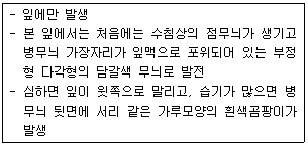

식물보호기사 (2012-05-20 기출문제)
1과목: 식물병리학
1. 세균에 의하여 발생하는 병은?
- 고구마 무름병
- 토마토 시들음병
- 무 검은썩음병
- 감자 역병
(정답률: 39%)

2. 병 삼각형(disease triangle)의 구성 요인이 아닌 것은?
- 시간
- 병원체
- 환경
- 기주식물
(정답률: 93%)
3. 다음 식물병 중 제 2차 전염이 없는 병은?
- 복숭아 잎오갈병
- 벼 도열병
- 고추 도뎅이병
- 오이 모자이크병
(정답률: 53%)
4. 감자의 병해 중에서 토양 ph가 높아질수록 발병이 심해지는 병은?
- 바이러스병
- 역병
- 겹둥근무늬병
- 더뎅이병
(정답률: 67%)
5. 고추 열매에 검은색의 작은 알갱이들이 동심윤문을 그리며 만들어지고, 습도가 높을 때 그 위에 분홍색 계통의 점액이 분비되는 병은?
- 역병
- 탄저병
- 더뎅이병
- 깨씨무늬병
(정답률: 79%)
6. 외류의 세균성(Erwinia tracheiphila) 풋마름병의 매개 곤충은?
- 파리류
- 나비류
- 딱종벌레류
- 진딧물류
(정답률: 43%)
7. 배추 무사마귀병의 주요 전염 경로는?
- 종자 전염
- 토양 전염
- 충매 전염
- 공기 전염
(정답률: 63%)
8. 벼 오갈병의 매개충은?
- 벼멸구
- 흰등멸구
- 벼메뚜기
- 끝동매미충
(정답률: 89%)
9. 세균 중 기주 식물에 혹을 만드는 것은?
- Erwinia carotovora pv. carotovora
- Agrobacterium tumefaciens
- Pseudomonas solanacearum
- Xanthomonas campestris pv. campestris
(정답률: 86%)
10. 유성세대가 없는 불완전균에서 일어나며 영양 균사에서 유성생식과 같은 유전적인 재조합이 일어나는 현상을 무엇이라 하는가?
- 접합
- 형질전환
- 형질도입
- 준유성교환
(정답률: 59%)
11. 병든 가지나 줄기가 처음에는 황색에서 오렌지색으로 변하고 나중에 부풀어 터진 후 황색의 가루가 비산하는 병은?
- 향나무 녹병
- 느릅나무 마름병
- 밤나무 줄기마름병
- 잣나무 털녹병
(정답률: 64%)
12. 기주가 자라는 곳에 이미 도입된 병원체를 없애는 방제 방법을 무엇이라 하는가?
- 면역
- 직접 보호
- 배제
- 제거
(정답률: 87%)
13. 다음 설명하는 병의 병원균이 속하는 곳은?

- 접합균류
- 난균류
- 자낭균류
- 담자균류
(정답률: 51%)
14. 식물 병원균의 병원성의 생리적 분화는 생화학적으로 다음 어느 것에 의한 것인가?
- 영양 요구성의 차이
- 산화 능력의 차이
- 환원 능력의 차이
- 기질 ph의 차이
(정답률: 59%)
15. 다음 중 phytoalexin 이 아닌 것은?
- pisatin
- capsidiol
- phaseollin
- salicylic acid
(정답률: 64%)
16. 바이로이드를 최초로 발견한 사람은?
- Diener
- Doi
- Iwanowski
- Vanderplank
(정답률: 75%)
17. 벼 흰잎마름병의 병원체는?
- Heterobasidion annosum
- Xanthomonas oryzae pv. oryzae
- Phytophthra capsici Leon
- Blumeria graminis
(정답률: 77%)
18. 사과나무 부란병에 대한 설명으로 틀린 것은?
- 자낭포자와 병포자를 형성한다.
- 병환부에서 균사나, 포자형으로 월동한다.
- 빗물이나 공기전염을 한다.
- 병 발생은 상처와 관계가 없다.
(정답률: 83%)
19. 다음 식물병 중 표징(sign)이 없는 병해는?
- 고추 괴저바이러스병
- 오이 흰가루병
- 보리 겉깜부기병
- 배나무 붉은별무늬병
(정답률: 77%)
20. 전신감염을 일으키는 병원체가 아닌 것은?
- 바이러스
- 파이토플라스마
- 선충
- 바이로이드
(정답률: 81%)
2과목: 농림해충학
21. 토양생태계에 있어서 토양 곤충의 가장 중요한 역할은?
- 생산자 역할
- 소비자 역할
- 분해자 역할
- 오염자 역할
(정답률: 83%)
22. 한해에 한번 이상 발생하는 해충은?(오류 신고가 접수된 문제입니다. 반드시 정답과 해설을 확인하시기 바랍니다.)
- 오리나무잎벌레
- 숫검은밤나방
- 벼잎벌레
- 콩잎말이명나방
(정답률: 42%)
23. 해충의 발생예찰에서 피해 허용밀도, 요방제밀도, 피해한계밀도는 어떤 항목에 속하는가?
- 발생시기의 예찰
- 발생량의 예찰
- 피해량의 예찰
- 방제여부의 예찰
(정답률: 56%)
24. 소위 “비단길”이라는 문명을 생기게 한 곤충은?
- 꿀벌
- 담배나방
- 조명나방
- 누에나방
(정답률: 81%)
25. 곤충의 죤스톤 기관은 더듬이의 어느 부분에 위치 하는가?
- 자루마디
- 팔굽마디(흔들마디)
- 채찍마디
- 밑마디
(정답률: 80%)
26. 소화기관의 변형체로서 흡즙성 곤충에서 나타나는 기관은?
- 숨은 배설관
- 여과실
- 직장아가미
- 알라타체
(정답률: 58%)
27. 수확직전 갑자기 해충을 방제하고자 할 때 주로 사용되는 살충제는?
- 훈증제
- 침투성약제
- 준침투성약제
- 접촉제
(정답률: 56%)
28. 곤충의 다리는 5마디로 구성된다. 몸에서부터 바른 순서로 나열된 것은?
- 밑마디-넓적마디-발마디-종아리마디-도래마디
- 밑마디-발마디-종아리마디-도래마디-넓적마디
- 밑마디-도래마디-넓적마디-종아리마디-발마디
- 밑마디- 종아리마디-발마디-넓적마디-도래마디
(정답률: 85%)
29. 다음 중 생산자에 유리하고 수용자에 불리한 생리반응이나 행동을 일으키는 활성물질은?
- 시노몬(synomone)
- 알로몬(allomone)
- 카이로몬(kairomone)
- 집합페로몬(aggregation pheromone)
(정답률: 71%)
30. 이화명나방의 암수 구별방법으로 부적당한 것은?
- 암컷의 날개 센털은 3개가 있다.
- 수컷의 전연각(前緣角)은 넓다.
- 암컷의 빛깔은 엷다.
- 수컷은 암컷에 비해 크기가 크다.
(정답률: 77%)
31. 살충제와 같은 유독성 화학물질이 곤충체내로 투입되었을 때 그 물질을 무독화시키기 위하여 곤충의 지방체 조직에서 일어나는 반응이 아닌 것은?
- 알킬화
- 황산화
- 아세틸화
- 가수분해
(정답률: 39%)
32. 학명 Lymantria dispar (Linnaeus) 은 어떤 해충인가?
- 매미나방
- 독나방
- 솔나방
- 솔잎벌
(정답률: 52%)
33. 콩나방은 콩꼬투리의 털이 적고 매끄러운 품종에 산란을 적게 한다. 이것은 작물 내충성의 어느 성질 때문인가?
- 내성
- 항생성
- 회피성
- 비선호성
(정답률: 75%)
34. 생물적 방제의 장점에 대한 설명으로 거리가 먼 것은?
- 모든 해충에 적용이 된다.
- 생물상이 평형을 되찾고 생태계가 안정된다.
- 효과발현이 늦지만 영구적으로 효과가 있다.
- 비용은 처음에만 필요하고 그 이후는 불필요하다.
(정답률: 75%)
35. 평균곤(halter)은 어느 곤충 목(目)에서 볼 수 있는가?
- 파리목
- 노린재목
- 딱정벌레목
- 나비목
(정답률: 73%)
36. 농약의 부작용이 아닌 것은?
- 자연계의 평형 파괴
- 잠재적 곤충의 해충화
- 동물상의 복잡화
- 약제저항성 해충의 출현
(정답률: 83%)
37. 종합적 해충관리(IPM) 측면에서 가장 중요한 기준이 되는 것은?
- 방제력
- 해충의 존재
- 경제적 피해 수준(밀도)
- 일반 평형 수준(밀도)
(정답률: 76%)
38. 다음 버즘나무방패벌레의 설명 중 틀린 것은?
- 버즘나무류의 잎뒷면에 모여 흡즙 가해한다.
- 1995년에 국내에 보고되었다.
- 성충으로 월동한다.
- 풀잠자리목에 속한다.
(정답률: 75%)
39. 벼 줄무늬잎마름병을 매개하는 해충은?
- 벼멸구
- 애멸구
- 흰등멸구
- 끝동매미충
(정답률: 81%)
40. 고자리파리의 월동충태는?
- 알
- 유충
- 번데기
- 성충
(정답률: 50%)
3과목: 재배학원론
41. 습해에 강한 작물은?
- 감자
- 고구마
- 보리
- 밭벼
(정답률: 50%)
42. 계통이 거의 고정되는 F5~F6세대까지는 교배조합별로 보통재배를 하여 집단선발을 계속하고, 집단의 동형접합성이 높아진 후기세대에 가서 계통선발을 실시하는 육종법은?
- 파생계통육종법
- 집단육종법
- 계통육종법
- 조환육종법
(정답률: 39%)
43. 독립유전일 때 재조합형이 얼마 나올때를 말하는가?
- 0%
- 15%
- 30%
- 50%
(정답률: 55%)
44. 작물재배시 부족하면 수정ㆍ결실이 나빠지는 미량원소는?
- Mn
- B
- Mo
- Zn
(정답률: 73%)
45. 벼 재배시 추락현상이 나타날 때 함께 발생하기 쉬운 병은?
- 깨씨무늬병
- 도열병
- 잎집무늬마름병
- 겉깜부기병
(정답률: 54%)
46. 종(種)이하의 작은 분류단위를 올바르게 표시한 것은?
- 종(種) - 변종(變種) - 품종(品種) - 아종(亞種)
- 종(種) - 아종(亞種) - 계통(系統) - 품종(品種)
- 종(種) - 아종(亞種) - 변종(變種) - 품종(品種)
- 종(種) - 계통(系統) - 변종(變種) - 품종(品種)
(정답률: 66%)
47. 작물의 형태적ㆍ생태적ㆍ생리적 요소를 형질(形質)이라 하는데, 다음 중 형질을 나타내는 것은?
- 단간종
- 만생종
- 조생종
- 숙기(출수기)
(정답률: 48%)
48. 적산온도가 가장 낮은 여름작물은?
- 메밀
- 조
- 담배
- 콩
(정답률: 70%)
49. 공기중의 습도가 높으면 식물에 어떤 현상이 나타나는가?
- 광합성이 활발해진다.
- 증산작용이 활발해진다.
- 필요물질의 흡수 및 순환이 촉진된다.
- 표피가 연약해지고 작물체가 도장한다.
(정답률: 69%)
50. 다음 두류 중 일반적으로 단위면적당 파종량이 가장 적은 것은?
- 콩
- 팥
- 녹두
- 완두
(정답률: 52%)
51. 다음 작물의 생육형태 조정법이 틀리게 연결된 것은?
- 콩 - 적심
- 토마토 - 휘기(연곡)
- 가지 - 적엽
- 옥수수- 제얼
(정답률: 53%)
52. 다음 종자 중 장명종자에 해당하는 것은?
- 토마토, 가지, 수박
- 콩, 옥수수, 밀
- 벼, 콩, 배추
- 고추, 당근, 수박
(정답률: 69%)
53. 식물체가 침관수(浸冠水)되었을 때의 대책으로 틀린 것은?
- 퇴수후 새로운 물을 갈아 댄다.
- 김을 매어 지중통기(地中通氣)를 좋게 한다.
- 침수 후에는 병충해의 발생이 줄어들기 때문에 방제가 필요없다.
- 피해가 심할 때에는 추파, 보식 등을 한다.
(정답률: 84%)
54. 재배포장에 파종된 종자의 발아(출아)상태를 조사할 때 발아전(發芽揃) 이란 몇 % 이상 발아한 것인가?
- 50%
- 60%
- 70%
- 80%
(정답률: 58%)
55. 우리나라의 통일찰 벼품종은 어떤 육종방법에 의해 육성되었는가?
- 계통육종
- 집단육종
- 여교배육종
- 파생계통육종
(정답률: 60%)
56. 다음 작물 중 자연교잡률(단위:%)이 가장 높은 것은?
- 보리
- 밀
- 수수
- 조
(정답률: 48%)
57. 수정되지 않은 난세포가 홀로 발육하여 배(胚)를 형성하는 생식법은?
- 동정생식
- 부정배생식
- 처녀생식
- 무배생식
(정답률: 56%)
58. 다음 벼 품종을 같은 지역에서 재배할 때 출수가 가장 늦은 것은?
- 오대벼
- 설악벼
- 태백벼
- 낙동벼
(정답률: 63%)
59. 다음 작물 중에서 산성토양에 가장 강한 것은?
- 감자
- 고구마
- 무
- 양파
(정답률: 41%)
60. 다음 작물 중 칼리를 충분히 공급해야 좋은 것은?
- 벼
- 옥수수
- 콩
- 고구마
(정답률: 52%)
4과목: 농약학
61. 30% 메프(MEP)유제(비중 1.0) 100cc 로 0.⑤% 의 살포액을 만들려고 한다. 이 때 소요되는 물의 양은?
- 59900cc
- 69900cc
- 79900cc
- 89900cc
(정답률: 66%)
62. 농약 살포액의 조제방법 중 일반적으로 가장 많이 사용하는 방법은?
- 배액 조제법
- 퍼센트액 조제법
- 비중 조제법
- ppm 조제법
(정답률: 77%)
63. 약제의 처리법 중 수면시용법이 갖추어야 할 특성으로 틀린 것은?
- 물에 잘 풀리고 널리 확산되어야 한다.
- 물이나 미생물 또는 토양성분 등에 의하여 분해되지 않아야 한다.
- 수중에서 장시간에 걸쳐 녹아 약액의 농도를 유지하여야 한다.
- 가급적 약제의 일부는 수중에 현수되도록 친수 및 발수성을 갖추어야 한다.
(정답률: 64%)
64. 본답후기 경엽처리용 제초제로서 사용 시 논물을 빼고 난 후 압력이 약한 분무기로 벼 잎에 묻지 않도록 살포하여야 하는 제초제는?
- 그락목손
- 글라신
- 2,4-D
- 설포세이트
(정답률: 53%)
65. 메프(Fenitrothion) 유제(50%)를 1000배로 희석하여 10a당 8말(160L)을 살포하려고 할 때 Fenitrothion 유제의 소요량은 약 몇 mL 인가?
- 80
- 120
- 160
- 320
(정답률: 68%)
66. 곤충을 질식시켜 치사시키는 물리적 작용을 갖는 살충제는?
- 기계유 유제
- 피레스 유제
- 에이카롤 유제
- 밀베멕틴 유제
(정답률: 71%)
67. 농약제조용 보조제인 증량제의 특성으로 가장 거리가 먼 것은?
- 가비중
- 수분함량 및 흡습성
- 입자의 크기 및 입도분포
- 표면장력
(정답률: 61%)
68. 식물호르몬 작용 저해제와 비슷한 작용특성을 보이기 때문에 식물이 고사하는 것보다 기형인 경우가 많은 제초제의 작용기작은?
- 단백질 합성저해
- 광합성 저해
- 호흡 저해
- 아미노산 합성저해
(정답률: 67%)
69. 농약원제를 용제에 녹이고 계면활성제를 유화제로서 첨가하여 제제한 것으로 다른 제형에 비해 제제가 간단한 특징이 있는 것은?
- 액제
- 수용제
- 유제
- 분산성액제
(정답률: 62%)
70. 농약사용 후에 나타나는 약해의 원인이라고 볼 수 없는 것은?
- 표류비산에 의한 약해
- 휘산에 의한 약해
- 잔류농약에 의한 약해
- 원제 부성분에 의한 약해
(정답률: 59%)
71. 다음 중 훈증제에 대하여 가장 바르게 설명한 것은?
- 유효성분과 발열제를 종이에 흡착시키거나 깡통에 넣은 것이다.
- 비등점이 낮은 농약을 액상, 고상 또는 압축가스의 형태로 용기 내에 충전한 것이다.
- 유효성분을 용제 분사제 등과 bombe 에 충전시킨 것으로 압력을 가하여 공기 중에 분출시켜서 사용한다.
- 가연성 재질에 유효성분을 혼합성형하고, 불완전 연소에 의하여 유효성분을 공기 중에 휘산시킨다.
(정답률: 64%)
72. 농약의 잔류 허용기준 설정 시 해당되지 않는 것은?
- 최대무작용량
- 반수치사량
- 안전계수
- 1일 섭취허용량
(정답률: 61%)
73. 피레스로이드(Pyrethroid)계 살충제의 특성에 대한 설명으로 틀린 것은?
- 간접접촉제로서 곤충의 기문이나 피부를 통하여 체내에 들어가 근육마비를 일으킨다.
- 온혈동물, 인축에는 매우 저독성이며 곤충에 따라 살충력이 강하다.
- 중추신경계나 말초신경계에 대하여 매우 낮은 농도에서 독성작용을 일으키는 신경독성화합물이다.
- 고온보다 저온상태에서 약효발현이 잘 된다.
(정답률: 52%)
74. 농약의 급성독성은 반수치사량(중위치사량, LD50 )으로 표시한다. 이 때 단위는?
- mg/mL
- mg/g
- mg/kg
- mg/mg
(정답률: 75%)
75. 약해가 일어나는 조건으로 가장 거리가 먼 것은?
- 장마철 보르도액의 살포
- 고온, 고광도시 석회황합제 사용
- 낙엽 후 기계유 유제의 살포
- 살포약제의 고농도 살포
(정답률: 70%)
76. 페놀(phenol)계 살균제로서 과수의 월동 방제용이나 목제 방부제로도 사용될 수 있는 약제는?
- 비타박스
- 캡탄
- 네오아소진
- PCP제
(정답률: 43%)
77. 다음 중 생장조정제로 사용되지 않은 농약은?
- 지베렐린산 수용제
- 나드 분제
- 메피쾃클로라이드 액제
- 모노크로포스 액제
(정답률: 35%)
78. 계면활성제 중 가용화 작용이 큰 HLB(hydrophil - elipophile balance) 값으로 가장 옳은 것은?
- 1~3
- 4~7
- 9~12
- 15~18
(정답률: 50%)
79. 다음 중 카바메이트(Cabamate)계 살충제는?
- 트리클로르폰
- 카보퓨란
- 수미치온
- 파단
(정답률: 74%)
80. 농약의 물리적 성질 중 현수성(Suspensibility)의 의미를 가장 잘 설명한 것은?
- 농약을 물에 가했을 경우에 유입자가 균일하게 분산하여 유탁액을 만드는 성질이다.
- 농약을 물에 다했을 때 균일하게 분산, 부유하는 성질과 그 안전성을 나타낸다.
- 농약을 물에 가했을 때 물과 약제와의 친화도를 나타낸다.
- 농약을 물에 가하여 작물에 뿌렸을 때 잘 부착되는 성질을 말한다.
(정답률: 61%)
5과목: 잡초방제학
81. 제초제의 작용기구에 따른 분류에서 광합성 저해계통은?
- 요소계
- 유기인계
- 페녹시계
- 페놀계
(정답률: 48%)
82. 기생성, 식해성 및 병원성을 지닌 생물을 이용하여 잡초의 발생밀도를 감소시키는 방제방법은?
- 생태적 방제법
- 물리적 방제법
- 생물적 방제법
- 화학적 방제법
(정답률: 83%)
83. 저항성 잡초의 출현에 가장 큰 원인이 되는 것은?
- 동일계 제초제의 연용
- 무경운 재배법
- 연작
- 합제 형태의 제초제 사용
(정답률: 84%)
84. 논잡초의 군락천이를 유발시키는 원인과 가장 관계가 깊은 것은?
- 춘ㆍ추경을 많이 하기 때문
- 동일한 제초제의 연속적인 사용 때문
- 담수조건하에서 재배하기 때문
- 기계이앙이 증가되었기 때문
(정답률: 84%)
85. 종내경합(Intra-specific competiton)이란?
- 서로 다른 잡초 초종간 경합
- 작물과 잡초간 경합
- 동일 종내의 잡초간 경합
- 여러 작물과 한 잡초간 경합
(정답률: 83%)
86. 우리나라 논에 발생하는 올방개의 출아가 늦은 이유를 가장 잘 설명한 것은?
- 지하경이 불균일하게 분포되어 있기 때문이다.
- 지하경 형성 부위가 깊고 출아하는데 걸리는 시간이 길기 때문이다.
- 지하경의 종자가 휴면을 일으키기 때문이다.
- 지하경의 크기가 크기 때문이다.
(정답률: 72%)
87. 잡초방제 방법 중 생태적 방제법이 아닌 것은?
- 작부체계
- 답전윤환재배
- 논 오리방사
- 경합능력이 큰 품종 선택
(정답률: 72%)
88. 다음 잡초들 중에서 논에서 발생하는 방사니과(사초과) 잡초들만으로 나열된 것은?
- 알방동사니, 올방개, 물고랭이, 등애풀, 가래
- 물옥잠, 물고랭이, 벗풀, 여뀌, 쇠털골
- 쇠털골, 올방개, 물참새피, 마디꽃
- 매자기, 바람하늘지기, 너도방동사니, 쇠털골, 올챙이고랭이
(정답률: 57%)
89. 다음 중 잡초 학명을 잘못 연결한 것은?
- 알방동사니 - Cyperus difformis L.
- 너도방동사니 - Cyperus serotinus Rottb.
- 올방개 - Eleocharis kuroguwai Ohwi
- 강피 - Monochoria vaginalis P.
(정답률: 46%)
90. 쌍자엽 잡초의 특징은?
- 뿌리는 섬유근계의 관근이다.
- 잎은 대개 평행맥이다.
- 생장점이 줄기 하단의 절간 부위에 있다.
- 배유대신에 2개의 자엽으로 되어 있다.
(정답률: 60%)
91. 다음 중 작물 파종 후 잡초경합한계기간이 가장 긴 작물은?
- 양파
- 콩
- 옥수수
- 녹두
(정답률: 55%)
92. 다음 중 잡초발생에 대한 옳은 설명은?
- 간척답이 보통답보다 잡초발생이 많다.
- 일모작답이 이모작답보다 잡초발생이 많다.
- 월동 맥류포장에서 피와 바랭이가 우점잡초이다.
- 여름 밭작물에서 둑새풀과 별꽃이 우점잡초이다.
(정답률: 52%)
93. 다음 중 영양번식을 주로 하는 잡초로 나열된 것은?
- 메꽃, 올방개, 알방동사니, 가래
- 바랭이, 쇠비름, 참방동사니, 깨풀, 돌피
- 올미, 가래, 메꽃, 올방개
- 바랭이, 쇠비름, 참방동사니, 깨풀, 명아주
(정답률: 62%)
94. 잡초가 발아하여 지표면 위로 출현하는 과정에 관여하는 요인과 가장 관련이 적은 것은?
- 토양심도
- 토양수분
- 토양온도
- 토양구조
(정답률: 57%)
95. 우리나라 논에서 제초제 저항성 잡초로 물달개비가 발견되었다. 이들은 어떤 계통에 대하여 저항성을 나타낸다고 알려져 있는가?
- 페녹시계
- 설포닐우레아계
- 트리아진계
- 벤조산계
(정답률: 58%)
96. 잡초경합한계기간 이란?
- 작물이 잡초와의 경합에 가장 유리한 시기
- 작물이 잡초와의 경합에 가장 민감한 시기
- 작물이 잡초와의 경합에 영향이 적은 시기
- 작물이 잡초와의 경합에서 피해가 적은 시기
(정답률: 74%)
97. 벼와 피의 형태적 차이점은?
- 피에는 잎귀만 있고 벼에는 잎혀만 있다.
- 벼에는 잎귀와 잎혀가 있으나 피에는 없다.
- 피에는 잎귀와 잎혀가 있으나 벼에는 없다.
- 벼에는 잎귀는 있으나 잎혀가 없다.
(정답률: 79%)
98. 다음 잡초 중 가을에 발생하여 월동 후에 결실하는 대표적인 동계잡초는?
- 별꽃, 둑새풀, 벼룩나물
- 쑥, 명아주, 비름
- 깻풀, 강아지풀, 민들레
- 애기메꽃, 바랭이, 별꽃
(정답률: 66%)
99. 농민이 제초제를 2m의 분무폭을 가진 분무기로 50m 거리를 살포하였을 때 15ℓ의 물을 분무하였다면, 10a의 밭에 필요한 분무량은?
- 100ℓ
- 150ℓ
- 200ℓ
- 250ℓ
(정답률: 64%)
100. 다음 중 같은 분류기준에 의한 제초제의 분류로 옳은 것은?
- 발아전 처리제 - 유기처리제
- 토양처리제 - 접촉형 처리제
- 무기제초제 - 이행형 제초제
- 토양 처리제 - 경엽 처리제
(정답률: 57%)